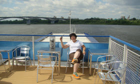

Обо мне
Пешеходов надо любить. Пешеходы составляют большую часть человечества. Мало того-лучшую его часть. Пешеходы создали мир. Это они построили города, возвели многоэтажные здания, провели канализацию и водопровод, замостили улицы и осветили их электрическими лампами. Это они распространили культуру по всему свету, изобрели книгопечатание, выдумали порох, перебросили мосты через реки, расшифровали египетские иероглифы, ввели в употребление безопасную бритву, уничтожили торговлю рабами и установили, что из бобов сои можно изготовить сто четырнадцать вкусных питательных блюд.
И когда все было готово, когда родная планета приняла сравнительно благоустроенный вид, появились автомобилисты.
Надо заметить, что автомобиль тоже был изобретен пешеходами. Но автомобилисты об этом как-то сразу забыли. Кротких и умных пешеходов стали давить. Улицы, созданные пешеходами, перешли во власть автомобилистов. Мостовые стали двое шире, тротуары сузились до размера табачной бандероли. И пешеходы стали испуганно жаться к стенам домов.
Интересненько
-
-

-